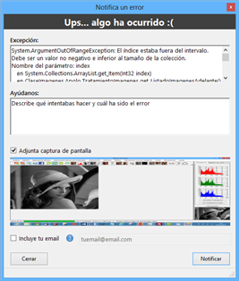

Errores
Cada vez que se produce un error no controlado, automáticamente Apolo lo detecta y muestra una ventana emergente informando del error. En esta ventana, se muestra la excepción que se ha detectado y su descripción. Además, en el momento de producirse la excepción se guarda una captura de pantalla que se puede adjuntar al formulario del error.

Ilustración 1. Formulario excepción.

Si se desea enviar el error, hay un cuadro de texto en el cual se debe escribir con el mayor detalle posible, lo que estaba intentando hacer y en qué momento se ha producido el error. Por último se puede adjuntar su email para que le informemos del progreso de detección del error.
Errores comunes
A algunas ocasiones se producen excepciones controladas (no mostrarán ningún cuadro de error) que afectan al correcto funcionamiento de Apolo. A continuación se muestran los errores más comunes:
- La barra de progreso se queda parada antes de llegar al 100%. Este error puede deberse a dos causas.
- La primera es debido a un conflicto al actualizar el histograma del menú lateral de Apolo y se soluciona desactivando los histogramas automáticos (Herramientas>Histogramas automáticos) La opción zoom interactivo muestra el cuador muy arriba (soluciónà abrir una imagen que haga que los scrolls aparezcan).
- Otra posible causa es que la imagen tenga poca resolución (menos de 400 x 400 píxeles), y en algunas ocasiones puede no llegar a actualizarse bien la barra. No obstante esto no afecta al funcionamiento de Apolo, el resultado será el mismo.
- Dentro de la función Grabar secuencia, al aplicar una serie de funciones la barra de progreso se queda parada y no completa la función. Este error es debido a que alguno de los parámetros no es un valor correcto para la función seleccionada. Debería revisar todos los parámetros de la lista de funciones.
- No conecta con Apolo Cloud. Esto puede deberse a la configuración de su antivirus o cortafuegos. Para solucionarlo, desactive temporalmente su sistema de protección y determine si éste es el error. En caso de afirmativo, agregue Apolo como excepción en su antivirus.
- Aparece error al buscar actualizaciones. Esto puede deberse a un fallo temporal del servidor, o a la configuración de su antivirus o cortafuegos. En caso de que el error persista más de 24 horas desactive temporalmente su sistema de protección y determine si éste es el error. En caso de afirmativo, agregue Apolo como excepción en su antivirus. Si siguiese fallando tras desactivar la protección de su sistema, notifíquelo en el menú Ayuda>Notificar un error.
Created with the Personal Edition of HelpNDoc: Free iPhone documentation generator